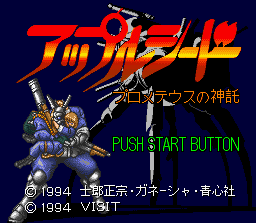

Appleseed - SNES Games

- Company: Visit
- Date Released: 1994
- Price (in yen): 9800
- Genre: Platform game
Controls
- A button: Shoot/Throw grenade
- B button: Jump
- X button: Cycle through Weapons Inventory
- Y button: Shoot/Throw grenade
- L button: Aim Diagonally
- R button: Aim Diagonally
- Start: Pause
- Select: Cycle through Weapons Inventory
From Gabriel Jarero:
This game allows you to control one of the two main characters from the anime. Some
objects must be shot in order to activate or deactivate traps. Jump to take objects floating in the air such as keys. The
players do not have a visible health bar, but they begin to change to varying shades of red depending on the amount of
damage they absorb and eventually die. Pressing L or R button + A or Y will shoot diagonally. Pressing
Up + B will make you jump higher.
Anime Video Game Resource Center © 1998 by Luis A. Cruz